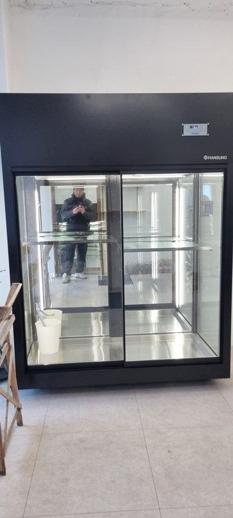
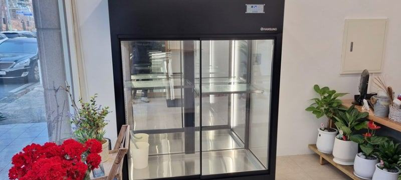
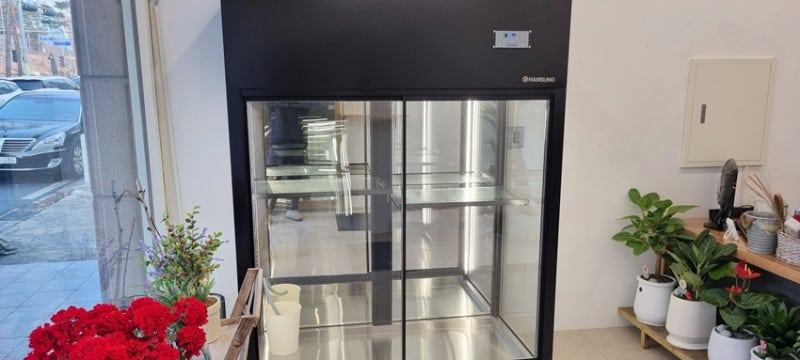
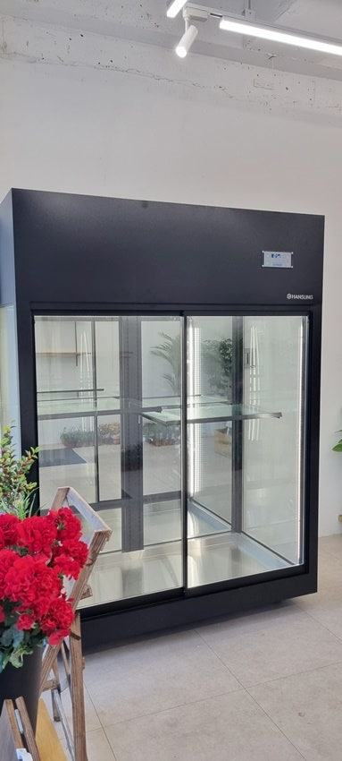
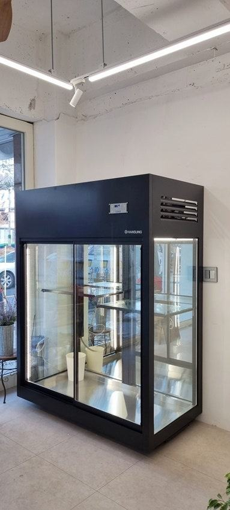
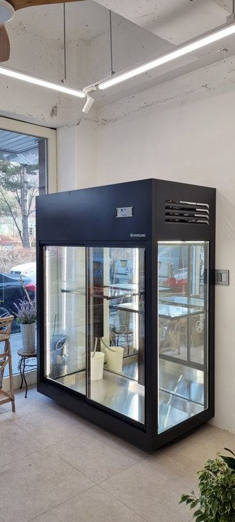
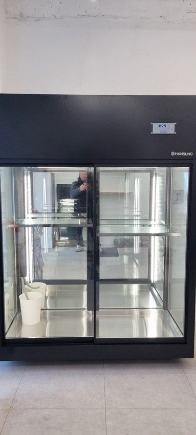
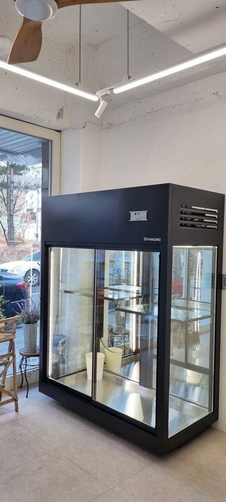
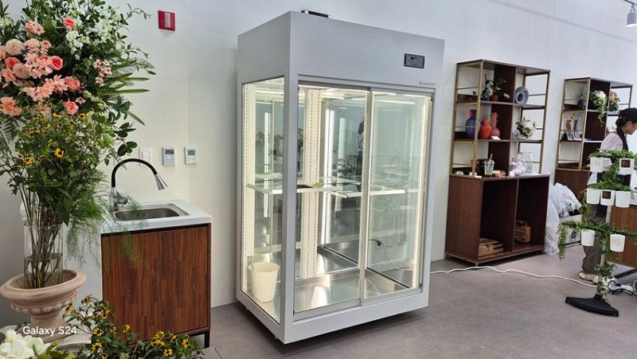
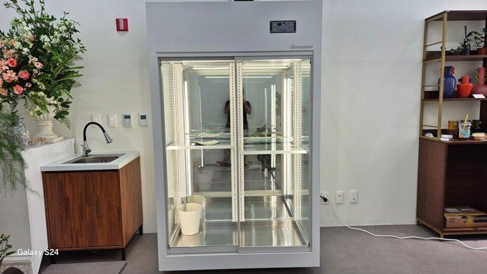

와인(음료)쇼케이스
와인바 창업 준비물, 냉장 설비부터 정리하는 체크리스트

와인바 냉장 설비는 손님에게 보여 주는 와인쇼케이스, 바 안쪽의 맥주·음료 냉장고, 치즈와 안주 재료를 두는 테이블 냉장고 세 가지로 나눠 준비하시면 빠지는 것이 없습니다. 그중 와인쇼케이스는 온도대 구분, 진동, 조명 열, 병 눕힘 구조를 먼저 정해야 매장 디자인과 함께 맞출 수 있습니다.
안녕하세요. 와인과 음료 쇼케이스를 매장에 맞춰 설계하고 만드는 한성쇼케이스입니다.
와인바를 준비하시는 사장님들은 와인 리스트와 인테리어, 조명 분위기에 많은 시간을 쓰십니다. 그러다 오픈이 가까워져서야 와인을 어디에, 어떤 온도로 보관하고 보여 줄지 급하게 정하는 경우가 적지 않습니다.
와인바에서 냉장 설비는 단순한 보관 장비가 아니라 매장의 분위기를 만드는 가구이기도 합니다. 벽면을 채운 와인쇼케이스 하나가 손님이 매장을 기억하는 장면이 되기도 하죠.
오늘은 와인바 창업 준비물 중 냉장 설비를 어떻게 나누고, 각각 무엇을 확인해야 하는지 체크리스트로 정리해 드리겠습니다.
1. 와인쇼케이스: 온도대를 몇 개로 나눌지
레드, 화이트, 스파클링은 마시기 좋은 온도가 서로 달라서 하나의 칸에 모두 넣으면 어느 한쪽은 손해를 봅니다.
적정 온도는 와인 종류와 스타일에 따라 다르니, 리스트 구성을 먼저 정한 뒤 칸을 몇 개 온도대로 나눌지 결정하세요.
글라스 와인을 많이 파는 바라면 오픈한 병을 바로 꺼낼 수 있는 칸을 바 가까이에 따로 두는 것도 방법입니다.
진열용과 서빙용을 분리하면 손님 앞 진열이 흐트러지지 않습니다.
- 레드·화이트·스파클링 비중을 먼저 정하세요.
- 글라스 와인용 칸을 따로 둘지 결정하세요.
2. 진동과 조명 열, 병을 눕히는 구조
와인은 오래 두는 상품이라 콤프레셔 진동이 병에 계속 전해지는 구조는 피하는 게 좋습니다. 기계실 위치와 선반 받침 방식을 상담 때 꼭 물어보세요.
벽면을 채우는 와인쇼케이스는 조명이 분위기를 좌우하지만, 조명 열이 병에 직접 닿으면 내부 온도 관리에 부담이 됩니다.
열이 적은 LED를 쓰고 조명 위치를 병과 떨어뜨려 설계하는 것이 기본입니다. 코르크 마개 와인은 눕혀 보관하는 경우가 많으니 라벨이 보이도록 눕히는 선반인지, 세워 보여 주는 진열 칸인지도 함께 정해 두세요.


3. 맥주·음료 냉장고와 테이블 냉장고
와인바도 맥주, 하이볼용 탄산수, 음료를 함께 파는 곳이 대부분입니다. 이 품목은 바 안쪽에서 빠르게 꺼내야 하니 손이 닿는 높이에 유리문 음료 냉장고나 언더바 냉장고를 두면 서빙이 빨라집니다.
치즈, 샤퀴테리, 과일 같은 안주 재료는 작업대 겸용 테이블 냉장고에 보관하면 플레이팅 동선이 짧아집니다.
와인쇼케이스에 안주 재료를 함께 넣으면 냄새와 온도 관리가 꼬이니 공간을 분리하세요.
- 바 안쪽 동선에 맞춰 음료 냉장고 위치를 정하세요.
- 안주 재료는 와인과 다른 냉장고에 두세요.
4. 인테리어 공사 전에 정할 것
와인쇼케이스는 벽에 매립하거나 바 카운터와 이어지게 설치하는 경우가 많아, 인테리어 도면 단계에서 크기와 위치를 정해야 합니다.
전용 콘센트, 기계실 열이 빠질 통로, 배수 위치가 이때 함께 결정됩니다.
프레임 색과 유리, 조명 색은 매장 콘셉트와 같이 고르세요. 어두운 톤의 바라면 블랙 프레임에 따뜻한 조명, 밝은 내추럴 와인바라면 우드와 어울리는 마감이 자연스럽습니다.
체크리스트
- 와인 리스트 기준 온도대 구분
- 글라스 와인 서빙용 칸
- 진동·조명 열 대책
- 눕힘 선반과 세움 진열 비율
- 맥주·음료 냉장고 위치
- 안주 재료용 테이블 냉장고
- 도면 단계에서 매립 위치·전기·통풍
현장에서 자주 보는 경우: 인테리어는 끝났는데 냉장 장비 선택이 뒤로 밀린 창업
업종은 다르지만 꽃집 창업 상담에서도 같은 장면을 자주 봅니다. 상권과 경쟁 매장을 분석하고, 클래스나 정기 구독 같은 차별화 서비스를 준비하고, 따뜻한 조명과 나무 소재 가구, 포토존까지 첫인상에 공을 들이는데 정작 상품을 지켜 줄 냉장 장비는 마지막에 정하시는 겁니다.
꽃집에서 냉장고가 꽃의 신선함을 지키고 폐기를 줄이는 장비이듯, 와인바에서는 와인쇼케이스가 상품 품질과 매장 첫인상을 동시에 책임집니다.
창업 체크리스트를 짤 때 인테리어와 같은 단계에 냉장 설비를 올려 두시길 권해 드립니다.










자주 묻는 질문
작은 와인바인데 와인쇼케이스 하나로 충분할까요?
와인 종류가 많지 않다면 온도대를 나눈 쇼케이스 하나로 시작할 수 있습니다. 다만 맥주와 안주 재료까지 함께 넣기보다는 작은 음료 냉장고나 테이블 냉장고를 따로 두는 편이 관리가 쉽습니다.
벽면 전체를 와인쇼케이스로 만들 수 있나요?
매장 실측을 바탕으로 벽면 길이와 천장 높이에 맞춰 제작할 수 있습니다. 매립 설치라면 통풍 경로를 함께 설계해야 하니 인테리어 단계에서 상담해 주세요.
설치 후 문제가 생기면 어떻게 하나요?
한성쇼케이스는 전국 240여 개 A/S 센터를 운영하고 있습니다. 대표전화 031-986-2458로 증상을 알려 주시면 가까운 센터에서 점검을 지원합니다.
매장 조건에 맞춰 만드는 한성쇼케이스
원하시는 제품 사진과 설치할 공간 사진만 보내 주셔도 매장에 맞는 구성을 추천해 드립니다.
- 전국 240여 개 A/S 전담 센터 운영
- 본사 대량 자재 매입으로 품질 대비 합리적인 가격
- 유럽제·삼성 냉각 콤프레셔 적용
- 국내 최초 쇼케이스 전문 디자이너 상주
매장 폭과 원하는 진열 구성을 알려 주세요. 실측과 견적을 안내해 드립니다.
031-986-2458